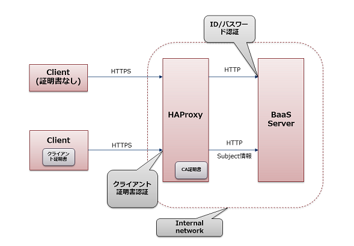

7.1. 概要¶
クライアント証明書認証は、クライアント毎に払い出されたクライアント証明書を用いて認証する方式です。
7.1.1. システム構成¶
リバースプロキシで認証を行う場合¶
クライアント証明書認証を行う場合の構成図を以下に示します。
BaaSサーバの前段にロードバランサまたはリバースプロキシ(以下RPと略します)を配置し、ここで TLS の終端と クライアント証明書認証を実施します。
RPは、クライアント認証の認証結果を HTTP ヘッダ (X-SSL-*) に付与し BaaS サーバに転送します。 BaaS サーバは HTTP ヘッダを確認し、リクエストを受け付けるかどうかを判断します。
不正なリクエストが直接BaaSサーバに届いてしまうと、セキュリティ上の脆弱性となります。 外部からのリクエストは必ずRPを経由し、不正なリクエストを排除する構成とします。
RP には HAProxy を使用することを推奨します。
RPの設定により、クライアント証明書認証と、その他の認証を併用することができます。
Tomcatで直接認証を行う場合¶
警告
Tomcatによるクライアント証明書認証は、現時点で品質保証はしておりません。
Tomcatで認証を行う場合、BaaSサーバ上でTLSの終端、クライアント証明書認証が可能です。
Tomcatへの通信の接続設定であるConnectorに、証明書等の設定を付与することで認証を行うことができます。 Connectorの設定によりクライアント証明書認証と、その他の認証を併用することができます。
注釈
複数台のBaaSサーバを使用する場合、L4のロードバランサを前段に設置して負荷分散を行います。
認証方式の検討¶
標準ではRPを使用した認証を推奨します。
単独のBaaSサーバを使用するシステムでは、サーバ削減のためTomcatでの直接認証が適します。
RPを使用した認証¶
メリット
- コネクション制御や負荷分散の柔軟性
- サーバ証明書や関連ファイルの配布はRPのみ
- SSL/TLSオフローディングにより、BaaSサーバの負荷削減につながる
- ダウンタイムなしで設定反映が可能 (graceful stop)
デメリット
- BaaSサーバに加え、RP用のサーバを用意して管理する必要がある
Tomcatによる直接認証¶
メリット
- BaaSサーバ単独で認証が可能
デメリット
- 複数台のBaaSサーバを使用する場合、ロードバランサを使用するため、サーバ台数の削減にならない
- 全てのBaaSサーバに証明書の配布、設定を行う必要がある
- 設定変更後、Tomcatの再起動が必要
7.1.2. 証明書とユーザの対応・プロビジョニング¶
BaaSサーバは、クライアント証明書に対しBaaS上のユーザを 1対1で紐付けます。 紐付けにはクライアント証明書の Subject フィールド(Common Name など)を使用します。
クライアント証明書認証用のユーザを事前登録しておく、もしくはユーザが初回アクセスを行ったタイミングで、自動でユーザを作成(プロビジョニング)するか選択できます。
7.1.3. 認証ユーザの権限¶
BaaSサーバでは証明書の情報をもとに、ログイン相当の処理を代行します。 正規のクライアント証明書を持つユーザは、ログインを行うことなく認証済みユーザの権限でREST APIを使用することができます。
7.1.4. クライアント証明書¶
クライアント証明書認証では、クライアントデバイス毎に個別のクライアント証明書を発行し、 これを用いて認証を実施します。
詳細は クライアント証明書の発行 を参照してください。